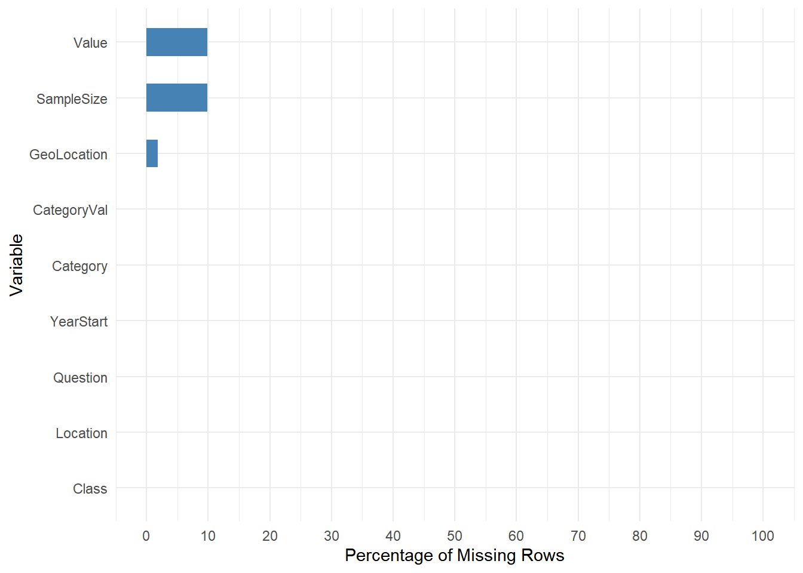
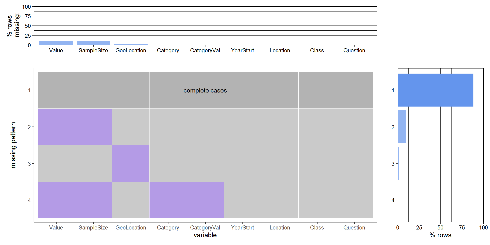

Code
df <- read.csv('data.csv')We have taken the data from CDC. This dataset includes data on adult’s diet, physical activity, and weight status from Behavioral Risk Factor Surveillance System. This data is used for DNPAO’s Data, Trends, and Maps database, which provides national and state specific data on obesity, nutrition, physical activity, and breastfeeding.
The metadata was last updated on August 26, 2023. This dataset is intended for public access.
We got the data in this link. https://catalog.data.gov/dataset/nutrition-physical-activity-and-obesity-behavioral-risk-factor-surveillance-system
Publisher : Centers for Disease Control and Prevention Maintainer : DNPAO Public Inquiries
The data can be provided in multiple formats, e.g CSV, JSON file, XML file.
df <- read.csv('data.csv')#dim(df)Dimensions:- 88629 - rows 33 - columns
#str(df)The data can actually be divided into different questions and its supporting variables.
e.g “Question: Percent of adults who engage in no leisure-time physical activity?” will have a numerical value which is actually a percentage. It will be shown that this answer belongs to which Class of question, location of the respondents as well as a category. This category column makes this data very interesting in the sense of how it is saved. For most of the question - topic - location combination, there exists multiple categories like RACE, Education, Income, etc as well as the values of the categories apart from the answer to the question. Due to this, a lot of columns like Education, Gender, Income has values which are missing when the Stratification category don’t correspond to that particular category value. It is actually better if we drop these particular columns when doing the analysis since they don’t really add a lot.
Lets look at each and every column in the dataframe and see how relevant they are. We will try to transform/drop them if we see it to be relevant to be dropped.
head(df,n=5) YearStart YearEnd LocationAbbr LocationDesc
1 2020 2020 US National
2 2014 2014 GU Guam
3 2013 2013 US National
4 2013 2013 US National
5 2015 2015 US National
Datasource Class
1 Behavioral Risk Factor Surveillance System Physical Activity
2 Behavioral Risk Factor Surveillance System Obesity / Weight Status
3 Behavioral Risk Factor Surveillance System Obesity / Weight Status
4 Behavioral Risk Factor Surveillance System Obesity / Weight Status
5 Behavioral Risk Factor Surveillance System Physical Activity
Topic
1 Physical Activity - Behavior
2 Obesity / Weight Status
3 Obesity / Weight Status
4 Obesity / Weight Status
5 Physical Activity - Behavior
Question
1 Percent of adults who engage in no leisure-time physical activity
2 Percent of adults aged 18 years and older who have obesity
3 Percent of adults aged 18 years and older who have obesity
4 Percent of adults aged 18 years and older who have an overweight classification
5 Percent of adults who achieve at least 300 minutes a week of moderate-intensity aerobic physical activity or 150 minutes a week of vigorous-intensity aerobic activity (or an equivalent combination)
Data_Value_Unit Data_Value_Type Data_Value Data_Value_Alt
1 NA Value 30.6 30.6
2 NA Value 29.3 29.3
3 NA Value 28.8 28.8
4 NA Value 32.7 32.7
5 NA Value 26.6 26.6
Data_Value_Footnote_Symbol Data_Value_Footnote Low_Confidence_Limit
1 29.4
2 25.7
3 28.1
4 31.9
5 25.6
High_Confidence_Limit Sample_Size Total Age.years. Education
1 31.8 31255
2 33.3 842 High school graduate
3 29.5 62562
4 33.5 60069
5 27.6 30904
Gender Income Race.Ethnicity GeoLocation ClassID
1 Hispanic PA
2 (13.444304, 144.793731) OWS
3 $50,000 - $74,999 OWS
4 Data not reported OWS
5 Less than $15,000 PA
TopicID QuestionID DataValueTypeID LocationID StratificationCategory1
1 PA1 Q047 VALUE 59 Race/Ethnicity
2 OWS1 Q036 VALUE 66 Education
3 OWS1 Q036 VALUE 59 Income
4 OWS1 Q037 VALUE 59 Income
5 PA1 Q045 VALUE 59 Income
Stratification1 StratificationCategoryId1 StratificationID1
1 Hispanic RACE RACEHIS
2 High school graduate EDU EDUHSGRAD
3 $50,000 - $74,999 INC INC5075
4 Data not reported INC INCNR
5 Less than $15,000 INC INCLESS15Dropping - YearEnd (same values), Datasource, Topic is same as class, Data_Value_Unit has only null values, drop ALT- same values, drop Data_Value_Type, Confidence Limits dropping for now,
# Check if Column1 and Column2 have the same values
same_values <- all(df$YearStart == df$YearEnd)
# Print the result
if (same_values) {
print("Column1 and Column2 have the same values.")
} else {
print("Column1 and Column2 have different values.")
}[1] "Column1 and Column2 have the same values."In our data, YearStart and YearEnd have the same values. So it doesn’t make sense for us to keep both of them together. Hence, we will be looking to drop YearEnd.
We are going to keep LocationAbbr since we might use them to make Geographic Location based visualization in the future.
We will be dropping LocationDesc, since LocationAbbr can act as a proxy for LocationDesc and we don’t need to keep both of them together.
unique(df$Datasource)[1] "Behavioral Risk Factor Surveillance System"We will be dropping Datasource since it has only one unique value and doesn’t add anything to the data.
unique(df$Class)[1] "Physical Activity" "Obesity / Weight Status"
[3] "Fruits and Vegetables" We will keep Class as it acts like a categorization of different Surveillance metrics.
unique(df$Topic)[1] "Physical Activity - Behavior" "Obesity / Weight Status"
[3] "Fruits and Vegetables - Behavior"We are going to drop Topic since it has a one to one correspondence with Class. Therefore, we don’t need to keep more Class and Topic.
Question is one of our most important columns, so naturally we aren’t planning to drop that particular column.
unique(df$Data_Value_Unit)[1] NAunique(df$Data_Value_Type)[1] "Value"Data_Value_Unit and Data_Value_Type have only a singular unique value in the column, hence we can drop both of them.
# Check if Column1 and Column2 have the same values
same_values <- all(ifelse(is.na(df$Data_Value), -99, df$Data_Value) == ifelse(is.na(df$Data_Value_Alt), -99, df$Data_Value_Alt))
# Print the result
if (same_values) {
print("Column1 and Column2 have the same values.")
} else {
print("Column1 and Column2 have different values.")
}[1] "Column1 and Column2 have the same values."Data_Value and Data_Value_Alt have the same values across all the rows. We can keep Data_Value and drop Data_Value_Alt from our dataframe.
unique(df$Data_Value_Footnote_Symbol)[1] "" "~"Data_Value_Footnote_Symbol doesn’t have any values of importance so we can drop that column.
unique(df$Data_Value_Footnote)[1] ""
[2] "Data not available because sample size is insufficient."We can drop since Data_Value_Footnote since it is purely correlated to the fact whether the Data_Value field is NA or not. In the case where it is NA, it has the value “Data not available because sample size is insufficient.”. Hence, we should keep in mind that wherever Data_Value field is NA, it is due to the lack of sample size.
We are going to drop Low_Confidence_Limit and High_Confidence_Limit, since we are not going to use their fields in our analysis.
We are going to keep Sample_Size since it might be useful for us inorder to perform visualizations.
We are going to drop Total,Age.years,Education,Gender,Income,Race.Ethnicity since they are perfectly correlated with StratificationCategory1 and Stratification1.
Columns below can also be dropped since columns for their proxy already exist which we are planning to keep. ClassID TopicID QuestionID DataValueTypeID LocationID StratificationCategoryId1 StratificationID1
df <- subset(df, select = -c(YearEnd, Datasource,LocationDesc, Topic,Data_Value_Unit,Data_Value_Type,Data_Value_Alt,Data_Value_Footnote_Symbol,Data_Value_Footnote,Low_Confidence_Limit,High_Confidence_Limit,Total,Age.years.,Education,Gender,Income,Race.Ethnicity,ClassID,TopicID,QuestionID,DataValueTypeID,LocationID ,StratificationCategoryId1,StratificationID1))library(dplyr)
library(tibble)
library(tidyr)
library(ggplot2)
library(forcats)
library(tidyverse)
library(redav)
set.seed(5702)## Setting all the blank values to NA values so that we can do the missing value analysis properly
#df[df['StratificationCategory1']=='','StratificationCategory1'] = NA
#df[df['Stratification1']=='','Stratification1'] = NA
#df[df['GeoLocation']=='','GeoLocation'] = NA
# Convert blank values to NA
df <- df %>%
mutate_if(is.character, na_if, "")Now that we have chosen the important columns, we are going to rename to columns.
LocationAbbr -> Location Data_Value -> Value Sample_Size] -> SampleSize StratificationCategory1 -> Category Stratification1 -> CategoryVal
colnames(df)[2] <- "Location"
colnames(df)[5] <- "Value"
colnames(df)[6] <- "SampleSize"
colnames(df)[8] <- "Category"
colnames(df)[9] <- "CategoryVal"# Calculate percentage of missing rows for each column
missing_percentage <- colMeans(is.na(df)) * 100
# Create a bar chart
ggplot(data.frame(variable = names(missing_percentage), missing_percentage),
aes(x = reorder(variable, missing_percentage), y = missing_percentage)) +
geom_bar(stat = "identity", fill = "steelblue", width = 0.5) +
labs(x = "Variable", y = "Percentage of Missing Rows") +
theme_minimal() +
coord_flip() +
scale_y_continuous(limits = c(0, 100), breaks = seq(0, 100, by = 10))
plot_missing(df, percent = TRUE)
From the missing value plots we can find a lot of insights.
Conclusions:-